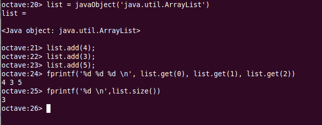

Utilización de clases java desde Octave¶
Note
Podemos acceder e interactuar con clases java desde Octave. Necesitaremos tener instalado el paquete java. Podemos comprobar si está instalado haciendo un help javaObject desde la consola de Octave. Si encuentra el help tendremos instalado el paquete. En caso contrario, habra que instalarlo siguiendo las instrucciones de la sección Utilización de paquetes adicionales
El paquete java nos proporciona una API con varios métodos que podemos utilizar para crear objetos de clases java y acceder a sus propiedades y métodos.
Podemos instanciar un objeto de una clase java utilizando el método javaObject(), que admite como primer parámetro el nombre cualificado de la clase a la que pertenece el objeto a instanciar. El método javaObject() admite como parámetros adicionales los que queramos pasar al constructor de la clase.
En el siguiente ejemplo creamos un objeto java.util.ArrayList al que añadimos varios números utilizando su método add(). A continuación accedemos al contenido del ArrayList con el método get() de la clase java utilizado desde dentro de la función fprintf() de Octave. Por último imprimimos el tamaño del ArrayList utilizando su método size():
list = javaObject('java.util.ArrayList')
list.add(4);
list.add(3);
list.add(5);
fprintf('%d %d %d \n',
list.get(0), list.get(1), list.get(2))
fprintf('%d \n', l.size());
La salida en pantalla la podemos ver en la siguiente imagen:
{kind=link}
Podemos observar la manera de acceder a los métodos del objeto java creado mediante el código objeto.punto.método habitual en java.
- javaclasspath()
- javaaddpath()
- javarmpath()